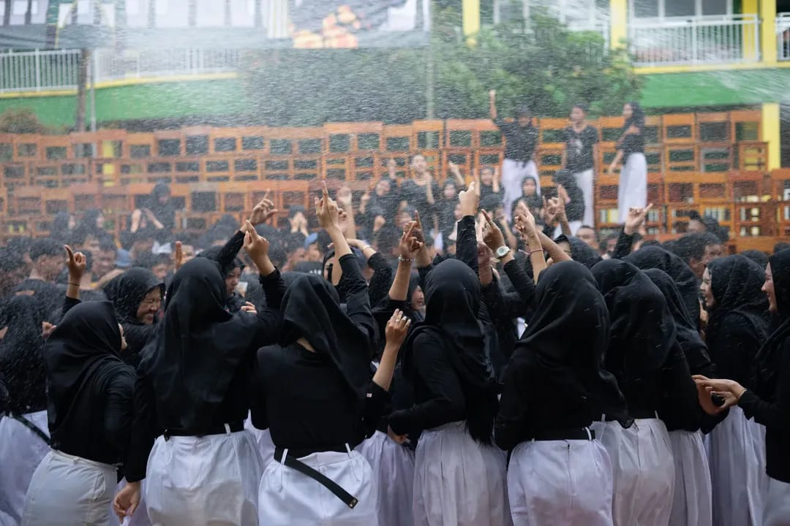
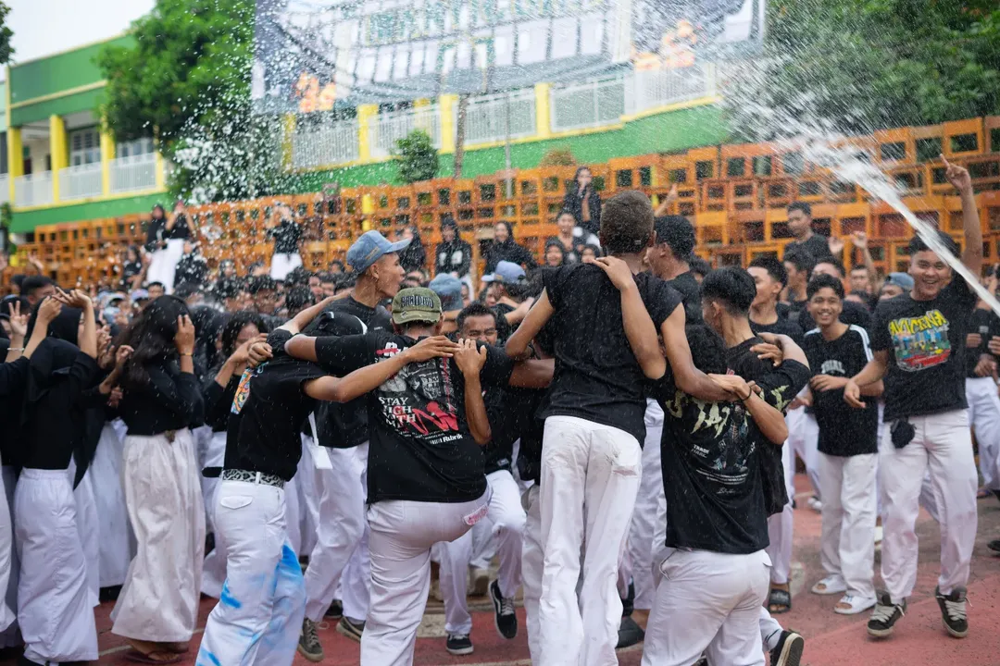
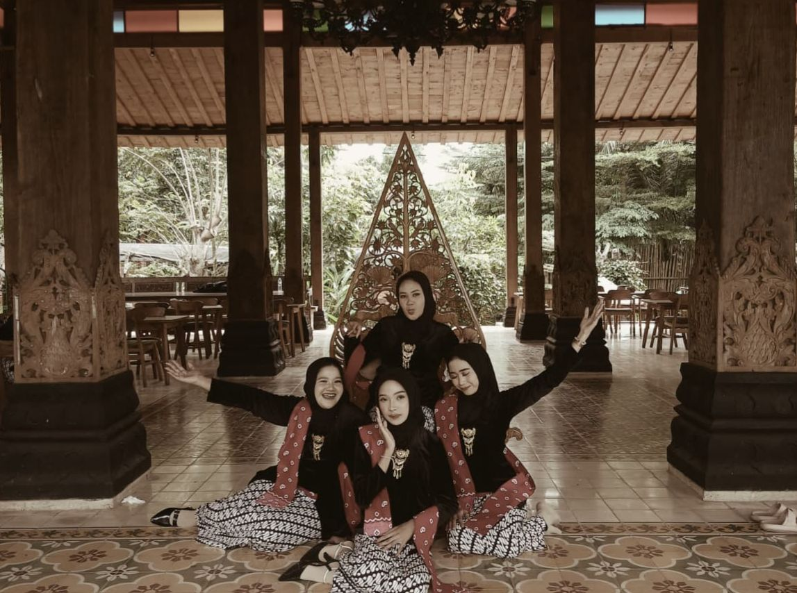
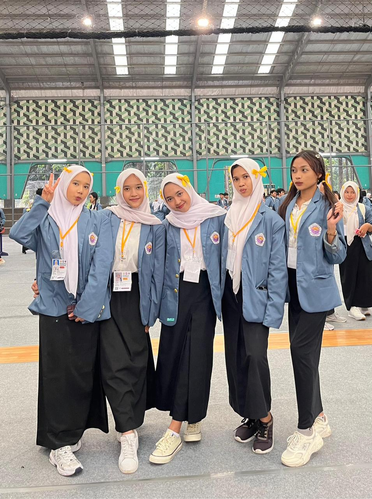
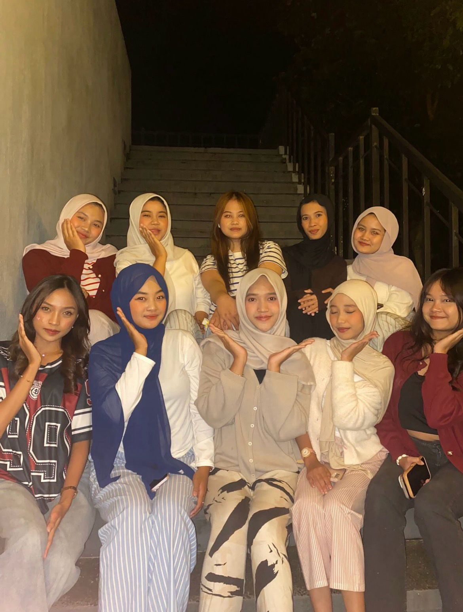
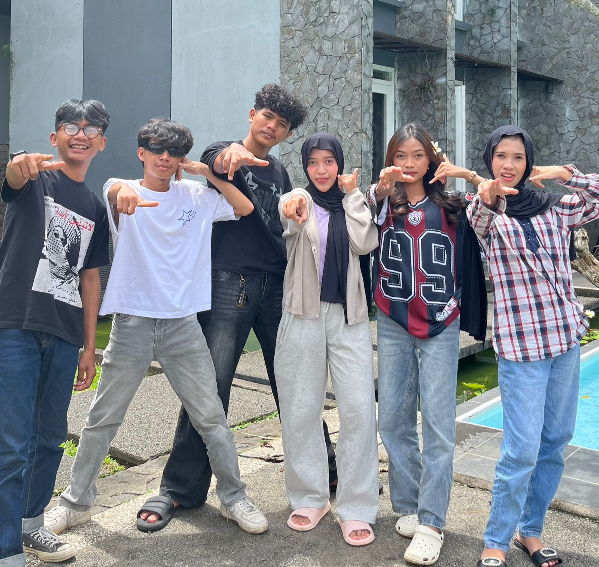
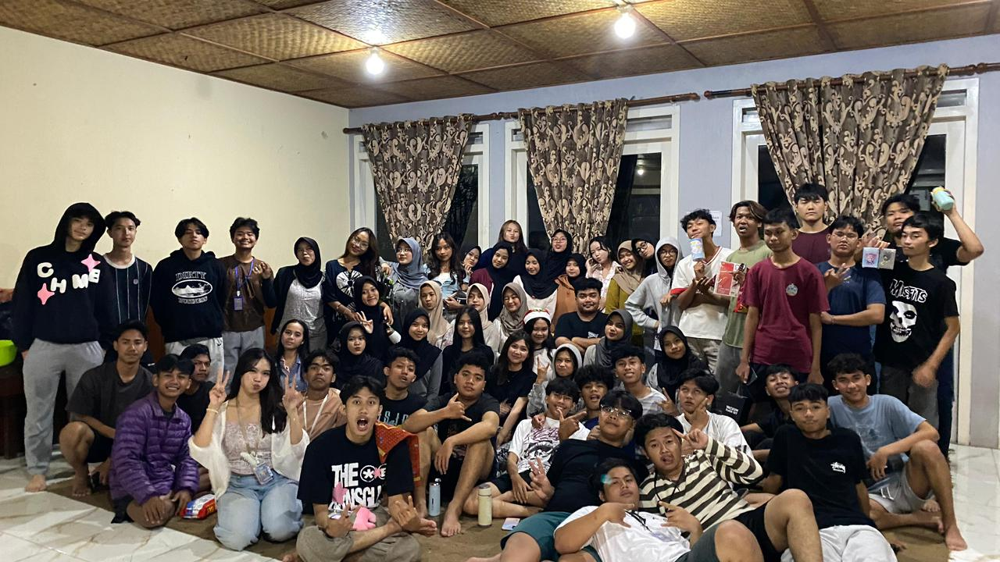

Selamat datang di website profil pribadi saya. Saya Salzabiella Afiffah Nur Hidayah, mahasiswi Manajemen di Universitas Gunadarma. Melalui halaman ini, saya ingin membagikan informasi mengenai latar belakang diri serta berbagai pengalaman yang telah saya lalui selama ini. Website ini berfungsi sebagai ruang dokumentasi untuk merangkum momen-momen berharga dan aktivitas yang pernah saya ikuti. Terima kasih telah berkunjung untuk mengenal lebih jauh mengenai profil dan perjalanan saya.

SD: SDI Daarul Huda (2013-2019)
Selama masa sekolah dasar, saya mengikuti ekstrakulikuler Pramuka, menjadi anggota English Club dan pernah berpartisipasi dalam Lomba Paskibra tingkat kota dan kabupaten.
SMP: MTS Matla'ul Anwar (2019-2022)
Pada masa ini, saya berfokus pada pengembangan akademik dan mengeksplorasi minat pribadi sebelum melanjukan ke jenjang kerjuruan.
SMK: SMK Avicena Rajeg (2022-2025)
Mengambil jurusan Otomatisasi & Tata Kelola Perkantoran. Dimana saya mendalami manajemen kearsipan, administrasi, saya juga aktif di ekstrakulikuler Basket dan sukses menyelesaikan program PKL.
Perguruan Tinggi: Universitas Gunadarma (2025-Sekarang)
Mahasiswa aktif jurusan Manajemen. Fokus utama saya saat ini adalah mendalami bidang ekonomi dan bisnis guna mempersiapkan diri menjadi tenaga profesional di masa mendatang.
1. Mahir mengelola alur surat masuk dan surat keluar serta sistem kearsipan dokumen secara sistematis.
2. Menguasai dasar-dasar etika bertelepon (Telephone Manners) sebagai resepsionis dalam menangani panggilan secara formal dan sopan.

♫ Now Playing: Tujuh Belas-Tulus ୨ৎ
Ujian telah usai, dan tugas-tugas sekolah pun akhirnya tuntas kami jalani. Hari yang kami tunggu-tunggu tiba: Foto Angkatan. Ada rasa tidak percaya bisa sampai di titik ini. Bagiku, momen ini bukan sebuah akhir, melainkan awal dari perjalanan baru yang sebenarnya.
Persiapan matang dari panitia terlihat jelas sejak jauh hari. Mulai dari konsep yang tertata hingga deretan bangku yang disusun menjadi tangga, semuanya dipersiapkan dengan penuh dedikasi. Kami hanya tinggal hadir untuk merayakan momen berharga ini bersama-sama.
Kegiatannya cukup padat dan berkesan. Dimulai dari sesi foto berseragam putih abu-abu di tengah hari, pembuatan video singkat, hingga momen seru saat kami basah-basahan di bawah semprotan mobil pemadam kebakaran.
Suasana semakin meriah saat malam tiba. Dengan balutan pakaian hitam abu-abu, kami menutup hari dengan pendar kembang api dan kepulan asap warna-warni. Kekompakan ini adalah sebuah memori indah yang akan selalu tersimpan dalam ingatan, sampai kapan pun.


— MEMORI SMK AVICENA, 2025 —

♫ Now Playing: Java Song ୨ৎ
Hari yang kami tunggu-tunggu akhirnya tiba. Setelah melihat keseruan kelas-kelas lain yang sudah lebih dulu mendapatkan sesi foto, kini giliran kelas kami yang mengisi lembaran buku tahunan. Kami sudah menyiapkan konsep ini sejak lama: Kebaya Jawa. Perpaduan warna hitam dan merah untuk kami, serta sentuhan hijau untuk guru kami, menciptakan harmoni yang sangat elegan di tengah restoran bernuansa Jawa yang asri.
Perjuangan dimulai sejak pagi buta. Aku sudah berada di rumah teman untuk makeup bersama MUA yang kami sewa. Rasanya seru sekali melihat kesibukan di pagi hari; ada yang sibuk memulas wajah, ada yang sedang bergelut memakai kain, hingga saling membantu memasang aksesori agar terlihat sempurna. Setelah semuanya siap, kami bergegas ke sekolah untuk berangkat bersama menuju lokasi.
Perjalanan menuju ke sana memang cukup menantang karena jalannya yang kurang bagus, tapi semua itu terbayar saat sampai. Suasananya sangat tenang, seperti kembali ke perkampungan yang asri. Sebelum mulai, kami melakukan sesi foto bersama sekelas. Setelahnya, kami beristirahat sejenak sambil menikmati ayam bakar yang nikmat dan jus alpukat segar. Rasanya benar-benar seperti sedang berlibur bersama keluarga besar.
Sesi foto utama pun dimulai. Sambil menunggu giliran per kelompok, kami menghabiskan waktu dengan "acara bebas"-mengambil foto sebanyak mungkin dengan HP masing-masing, bercerita, dan menikmati pemandangan. Setelah sesi kelompok dan peroranganku selesai, suasana makin pecah saat kami mulai karaokean dan joget bersama.
Lelahnya memakai kebaya seharian hilang seketika karena rasa seru yang luar biasa. Kami pulang dengan hati yang sangat senang. Dan sekarang, saat buku tahunan itu sudah berada di tanganku, aku menyadari satu hal. Di sana, aku menuliskan sebuah kutipan yang sangat berarti:
"Pada akhirnya, ini semua hanyalah permulaan." —Nadin Amizah୨ৎ



— MEMORI SMK AVICENA, 2025 —

♫ Now Playing: Tak Ada Yang Abadi ୨ৎ
Menjadi bagian dari mahasiswa baru adalah sebuah kebanggaan besar bagi saya. Pengalaman ospek kemarin di Depok benar-benar memberikan kesan yang mendalam. Agar tidak terlambat, saya dan beberapa teman memutuskan untuk menginap di apartemen sekitar lokasi satu hari sebelumnya.
Momen ospek terasa sangat seru! Kami disambut dengan berbagai penampilan luar biasa dari kakak tingkat, mulai dari atraksi silat yang gagah hingga tarian yang memukau. Rasanya waktu berlalu begitu cepat meskipun acara berlangsung hingga sore hari. Selain pengalaman baru, saya juga pulang membawa banyak relasi teman baru. Kami menutup hari itu dengan foto bersama sebelum akhirnya menempuh perjalanan pulang ke Tangerang menggunakan kereta.


— MEMORI UNIVERSITAS GUNADARMA, 2025 —

♫ Now Playing: Ingatlah Hari Ini ୨ৎ
Hanya berselang dua bulan setelah ospek, jurusan Manajemen mengadakan acara Makrab di sebuah villa di Bogor. Sambil menunggu bus berangkat, aku tetap menyempatkan diri untuk ikut kuliah online.
Sesampainya di sana, kami langsung disambut semangkuk bakso hangat di sebuah saung. Suasananya sangat syahdu, udara dingin yang sejuk berpadu dengan suara aliran sungai yang deras tepat di samping tempat kami makan. Di malam harinya, momen keakraban mulai terasa saat acara tukar kado. Di sini pula aku mendapatkan teman sekamar dari kelas lain yang akhirnya menjadi akrab.
Keesokan harinya diawali dengan sarapan dan kuliah online bersama, lalu dilanjutkan dengan berbagai games seru. Meskipun timku kalah, rasa senang tetap mendominasi. Momen yang paling berkesan adalah saat kami menyalakan api unggun, menerbangkan lampion ke langit malam, dan duduk bercerita di pinggir kolam. Pengalaman ini benar-benar tidak terlupakan.



— MEMORI UNIVERSITAS GUNADARMA, 2025 —